| Integrante | Usuario GitHub |
|---|---|
| José Ruiz | jruiz002 |
| Dilary Cruz | dils1809 |
| Gerardo Fernández | GerardoFdez7 |
Repositorio: github.com/jruiz002/asl-recognition-cuda · Noviembre de 2026
Se tomó el pipeline de entrenamiento de redes convolucionales del Laboratorio 3 (PyTorch, 17 400 imágenes de 29 clases del alfabeto ASL) y se construyó una versión paralela con una separación estricta del trabajo: la preparación de imágenes (lectura, decodificación JPEG, resize y augmentation) en el CPU multinúcleo y la matemática de la red (convoluciones, capas densas, backward, optimizador y un kernel CUDA propio) en la GPU con CUDA. Ambas versiones se midieron en la misma laptop, con los mismos datos e hiperparámetros, en 5 corridas por versión más un calentamiento no contabilizado.
cnn_reg_drop035cnn_base_augcnn_reg_drop035)| Componente | Detalle |
|---|---|
| CPU | Intel Core i9-13980HX · 24 núcleos (8 P-cores + 16 E-cores) · 32 procesadores lógicos · 15,6 GB de RAM |
| GPU | NVIDIA GeForce RTX 4060 Laptop · 8 GB · 24 SMs (3 072 núcleos CUDA) · compute capability 8.9 · driver 555.97 |
| Software | Windows 11 · Python 3.12.10 · PyTorch 2.14.1+cu126 (CUDA 12.6, cuDNN 9.10) · Numba 0.68.1 + numba-cuda 0.30.4 · NumPy 2.4.6 · Pillow 11.3 |
| Datos | Partición original del lab: 12 180 entrenamiento / 2 610 validación / 2 610 prueba · 64×64 RGB |
| Modelos | cnn_reg_drop035 (CNN con más convoluciones, sin augmentation) y cnn_base_aug (CNN con augmentation en cada época) |
| Protocolo | 6 épocas fijas · batch 64 · AdamW · semilla 42 · caché reconstruida desde los JPEG en cada corrida · 1 calentamiento + 5 corridas · time.perf_counter() con torch.cuda.synchronize() y CUDA events |
El baseline secuencial es el código original del laboratorio (src/neural.py) forzado a CPU, con un
solo proceso para los datos (num_workers=0) y los 8 hilos de PyTorch del lab. Solo se le agregaron
cronómetros por fase. Todo se ejecuta con python benchmark.py, que corre ambas versiones y registra
cada segundo el uso de la GPU (nvidia-smi) y cada 0,25 s el uso de cada núcleo del CPU, etiquetado con la fase activa.
| Fase | Hardware | Implementación (versión paralela) |
|---|---|---|
| FASE 1 · Preparación de imágenes | CPU, 32 procesos | proyecto3/parallel/cpu_prep.py: ProcessPoolExecutor con un proceso por núcleo lógico; cada proceso decodifica bloques de 128 JPEG y escribe directamente en un .npy compartido (numpy.memmap), sin devolver píxeles por pickle. El resultado es idéntico bit a bit a la caché del lab. |
Augmentation (cnn_base_aug) | CPU, 4 workers | DataLoader(num_workers=4, persistent_workers=True, pin_memory=True): los workers generan lotes uint8 aumentados mientras la GPU entrena el lote anterior. |
| Transferencia CPU → GPU | Bus PCIe | Datos en uint8 (1 byte por valor) desde memoria fijada con non_blocking=True. Sin augmentation, todo el conjunto se sube una sola vez y los lotes se arman dentro de la GPU. |
| FASE 2 · Entrenamiento y evaluación | GPU (CUDA) | proyecto3/parallel/gpu_train.py: forward, pérdida, backward y AdamW con cuDNN/cuBLAS (cudnn.benchmark=True). gpu_kernels.py: kernel propio Numba que convierte uint8 HWC en float32 CHW /255 (la capa de entrada de la red). |
Cada hilo procesa un píxel (sus 3 canales) de una imagen. Bloques de 16×16 = 256 hilos (múltiplo de
32, el tamaño de un warp) y grid de (⌈W/16⌉, ⌈H/16⌉, N) = (4, 4, N): los ejes x/y recorren teselas de la imagen y
el eje z recorre las imágenes del lote. Un lote de 64 imágenes lanza 1 024 bloques × 256 hilos = 262 144 hilos, uno
por píxel. Las escrituras en el plano CHW son coalescentes (16 hilos × 4 B contiguos). El kernel comparte memoria
(__cuda_array_interface__, sin copias) y stream con PyTorch.
Media ± desviación estándar de 5 corridas, en segundos. Speedup = tsecuencial / tparalela.
cnn_reg_drop035 | |||
|---|---|---|---|
| Fase | Secuencial | Paralela | Speedup |
| Preparación (CPU) | 8,14 ± 0,44 | 4,25 ± 0,59 | 1,91× |
| Transferencia H2D | – | 0,05 ± 0,00 | – |
| Entrenamiento | 100,76 ± 7,69 | 6,49 ± 1,19 | 15,52× |
| Evaluación | 8,61 ± 0,54 | 0,46 ± 0,05 | 18,60× |
| Total | 117,53 ± 8,49 | 11,28 ± 1,80 | 10,42× |
cnn_base_aug | |||
|---|---|---|---|
| Fase | Secuencial | Paralela | Speedup |
| Preparación (CPU) | 13,53 ± 6,58 | 4,98 ± 0,33 | 2,72× |
| Transferencia H2D | – | 0,04 ± 0,00 | – |
| Entrenamiento | 183,47 ± 26,30 | 32,06 ± 3,71 | 5,72× |
| Evaluación | 14,24 ± 1,65 | 0,92 ± 0,35 | 15,50× |
| Total | 211,28 ± 29,13 | 38,04 ± 4,22 | 5,55× |
La transferencia H2D solo existe en la versión paralela: es un costo agregado (0,4 % del tiempo paralelo) incluido
en el total. Sub-métricas del entrenamiento: en la versión secuencial, armar los lotes en el CPU cuesta 5,7 s
(cnn_reg_drop035) y 73,9 s (cnn_base_aug, por la augmentation); en la paralela, el kernel
de normalización suma 0,21 s y 1,74 s.
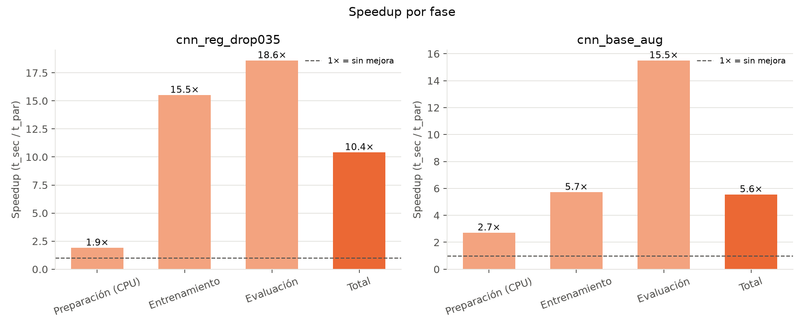
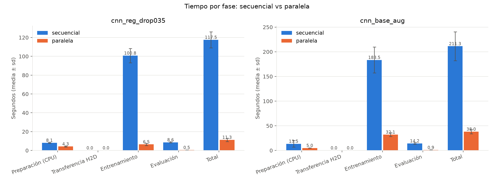
| Experimento | Secuencial: accuracy / macro F1 | Paralela: accuracy / macro F1 |
|---|---|---|
cnn_reg_drop035 | 0,9130 / 0,9118 | 0,9455 / 0,9451 |
cnn_base_aug | 0,7559 / 0,7530 | 0,7329 / 0,7300 |
La versión paralela forzada a CPU reproduce exactamente la pérdida de cada época y el F1 de la secuencial,
así que la lógica es la misma. Las diferencias en la GPU (≤ 3,3 puntos, en ambos sentidos) vienen de que cuDNN suma
en otro orden (la suma de punto flotante no es asociativa) y, en cnn_base_aug, de que cada worker usa su
propio generador de augmentation. Con solo 6 épocas, eso cambia la trayectoria del entrenamiento.
| Normalizar 12 180 imágenes (20 repeticiones) | Media (ms) | Speedup |
|---|---|---|
| A. CPU NumPy | 503,9 | 1,00× |
B. CPU NumPy + copia H2D en float32 | 809,2 | 0,62× |
C. Copia H2D en uint8 + kernel Numba | 16,1 | 31,4× |
| D. Kernel Numba (solo cómputo) | 3,2 | 157,1× |
| E. PyTorch nativo en la GPU | 13,7 | 36,8× |
Copiar uint8 y normalizar en la GPU (C) es 50× más rápido que normalizar en el CPU y copiar
float32 (B), porque cruza 4× menos bytes por PCIe. La salida es idéntica bit a bit a la de NumPy.
La tabla se calculó cruzando por hora el registro de cada núcleo del CPU con el de nvidia-smi
(solo corridas medidas y terminadas). "Núcleos activos" = procesadores lógicos con uso > 50 %.
| Versión · modelo | Fase | CPU total | Núcleos activos (medio / máx) | GPU-Util medio / máx |
|---|---|---|---|---|
| Secuencial · reg | Preparación | 8 % | 1,4 / 12 | 0 % / 0 % |
| Secuencial · reg | Entrenamiento | 32 % | 9,1 / 22 | 0 % / 0 % |
| Paralela · reg | Preparación | 72 % | 24,8 / 32 | – |
| Paralela · reg | Entrenamiento | 13 % | 3,3 / 31 | 77 % / 98 % |
| Paralela · reg | Evaluación | 11 % | 2,9 / 5 | 68 % / 97 % |
| Secuencial · aug | Entrenamiento | 33 % | 11,1 / 24 | 0 % / 0 % |
| Paralela · aug | Preparación | 65 % | 21,9 / 32 | – |
| Paralela · aug | Entrenamiento | 25 % | 9,1 / 25 | 14 % / 99 % |
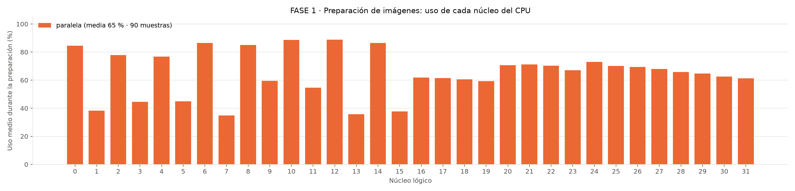
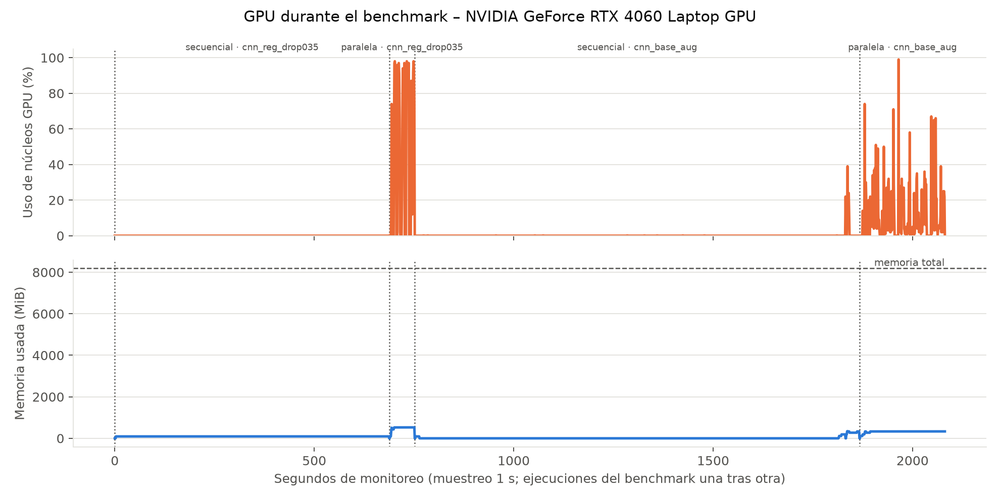
cnn_reg_drop035 llega al 98 % y la de cnn_base_aug queda limitada por la augmentation en el CPU.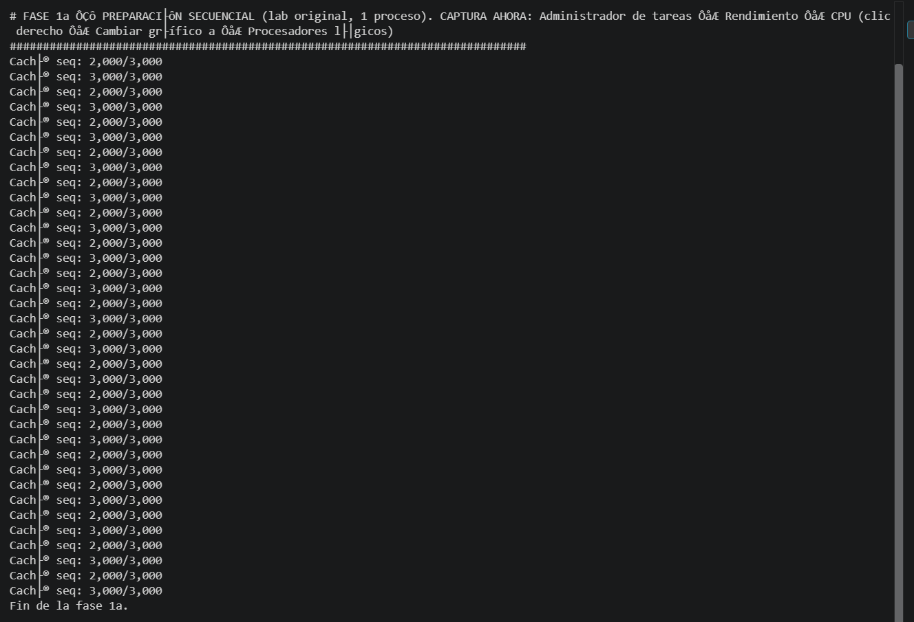
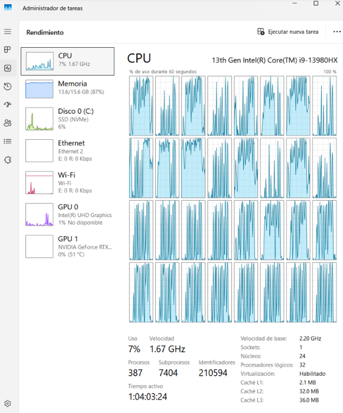
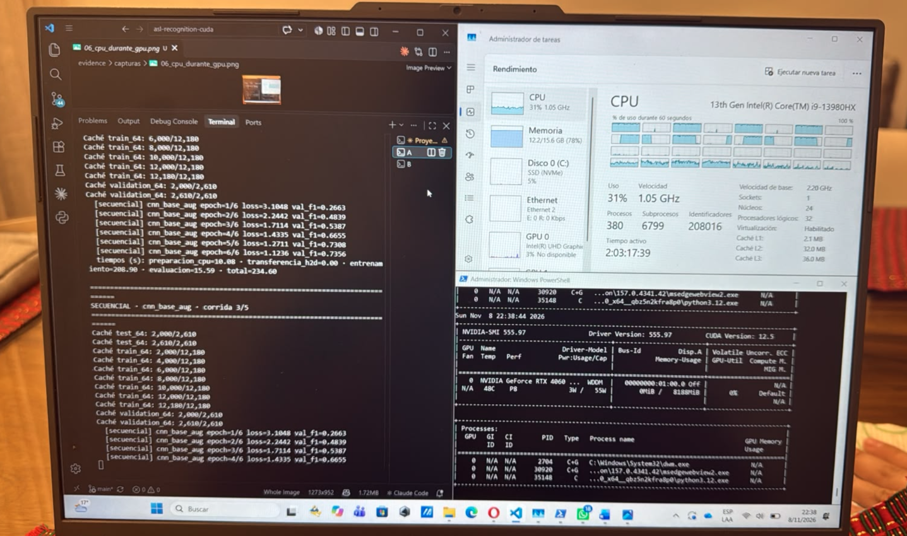
cnn_base_aug: CPU trabajando y nvidia-smi con la GPU en 0 % (P8, 0 MiB).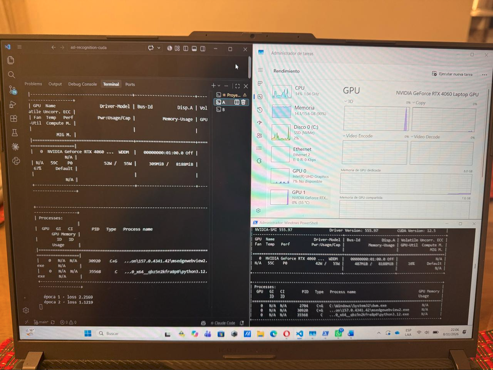
python3.12.exe como proceso CUDA (tipo C).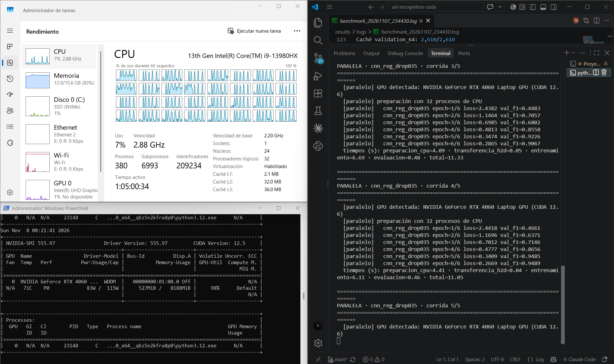
cnn_reg_drop035: GPU-Util 98 %, P0, 83 W; el log con "GPU detectada" y "preparación con 32 procesos de CPU"; y el CPU con una ráfaga en los 32 núcleos al empezar cada corrida (FASE 1) mientras la GPU entrena entre ráfagas (FASE 2).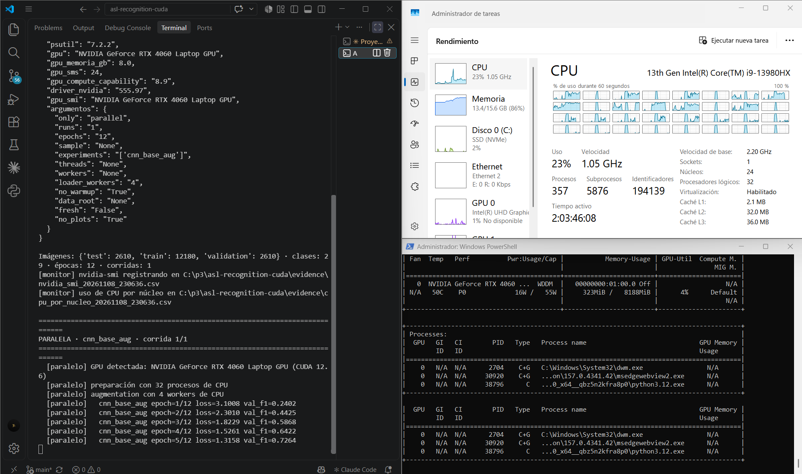
cnn_base_aug en paralelo: GPU en P0 con el proceso CUDA, pero GPU-Util bajo (4 %) porque espera a los workers de augmentation del CPU.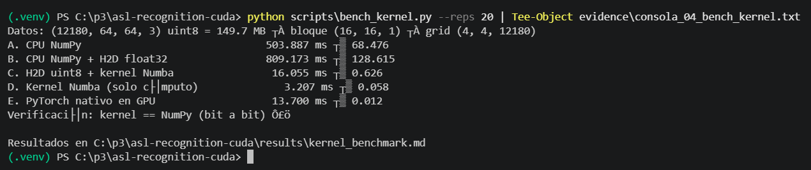
Las 13 capturas, los registros completos (evidence/cpu_por_nucleo_*.csv,
evidence/nvidia_smi_*.csv, results/logs/) y la tabla por fase de cada ejecución están en
evidence/EVIDENCIA.md.
Porque son cargas con perfiles opuestos. El manejo de archivos es E/S de disco, llamadas al sistema operativo y decodificación JPEG (códigos Huffman de longitud variable, mucha ramificación): pocas tareas grandes e independientes, una por archivo. Eso encaja con el CPU, cuyos núcleos tienen predicción de saltos, cachés grandes y acceso al disco; la GPU ni siquiera puede leer archivos y, en la decodificación, sus warps divergirían. Al repartir los archivos entre los 32 hilos, el uso del CPU subió de ~8 % a ~72 % y la preparación se aceleró ~2×.
La matemática de la red, en cambio, son millones de multiplicaciones y sumas idénticas y regulares (convoluciones convertidas en productos de matrices). Eso encaja con la GPU: miles de núcleos SIMT y gran ancho de banda de memoria. El entrenamiento se aceleró 15,5× con la GPU al 77 % de uso medio, mientras el CPU quedaba casi libre (~13 %). Además, la separación crea un pipeline: mientras la GPU entrena con el lote k, el CPU prepara el k+1.
cnn_reg_drop035) y 5,6× (cnn_base_aug). La mayor
ganancia está en el entrenamiento (15,5×) y la evaluación (18,6×), que eran el 93 % del tiempo secuencial.Funciones y librerías adicionales para trabajar con la GPU: torch.cuda
(is_available, device, synchronize, Event), cuDNN
(torch.backends.cudnn.benchmark), cuBLAS, Tensor.pin_memory() y
.to(device, non_blocking=True), numba.cuda (@cuda.jit, cuda.grid,
as_cuda_array, external_stream), numba-cuda con cuda-toolkit 12.6 por pip
(NVVM y nvJitLink, sin instalar el CUDA Toolkit) y nvidia-smi para el monitoreo. En el CPU:
concurrent.futures.ProcessPoolExecutor, numpy.memmap, DataLoader con workers y
psutil.
| Lo justifican | Lo limitan (observado en este proyecto) |
|---|---|
|
|
| Problema | Causa y solución |
|---|---|
| "El archivo de paginación es demasiado pequeño" al crear los 32 procesos | NumPy reservaba búferes de OpenBLAS para 32 hilos en cada proceso hijo (+23,2 GB de memoria comprometida). Con OPENBLAS_NUM_THREADS=1 en los hijos: +0,8 GB y una preparación más rápida (3,85 s → 2,36 s). |
DataLoader worker exited unexpectedly (WinError 6) | 8 workers × ~0,9 GB (cada uno importa torch) dejaron 0,75 GB de RAM libre. Se agregó --loader-workers y se midió con 4. |
Kernel Numba: np.row_stack y nvJitLinkError | NumPy 2.5 eliminó row_stack (se fijó NumPy < 2.5) y el NVVM 12.9 de Numba no era compatible con el nvJitLink 12.6 de torch (se alineó todo a la serie 12.6). |
| Benchmark interrumpido | Las corridas completas ya estaban en results/tiempos.csv: se completó con --only/--experiments, sin repetir lo terminado. Total: 5 corridas por versión y modelo. |
cnn_reg_drop035 y 5,6× en cnn_base_aug. Por fase: preparación 1,9–2,7× (CPU multinúcleo), entrenamiento 15,5× y 5,7×, evaluación 18,6× y 15,5× (GPU).Reproducción: python scripts/check_env.py → python benchmark.py --fresh --loader-workers 4 →
python scripts/bench_kernel.py → python scripts/armar_evidencia.py. Guía completa en
GUIA_EJECUCION.md; análisis detallado en docs/01–06 y docs/decisiones_alcance.md.